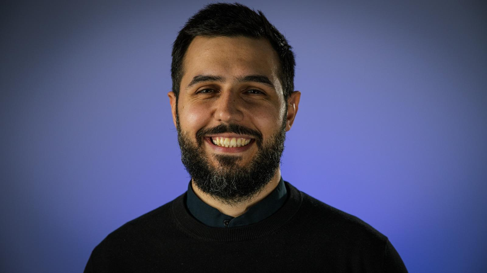

Summary
Results driven, player focused World Creator, from design to aesthetics who owns each stage from concept to playtest to retaining audiences. From defining and implementing World design, to leading 16 people teams and growing employees to their full potential, I've shipped 4 AAA projects.
Education
Kingston University
MA Game Design
2016 - 2017 | Kingston upon Thames, UK
UAUIM Ion Mincu
MA Interior Architecture
2010 - 2016 | Bucharest, Romania
Skills
Game Engines
Unreal Engine, Snowdrop, Anvil, Dunia
3D Modelling
NURBS Modelling, 3D Modelling
2D Design
Inkscape, Photoshop, Miro